Myslím, že nadešel čas zrekapitulovat poslední část dovolené v Českém ráji, než to všechno zapomenu :-). Sobota měla být dle předpovědi deštivá, zvolili jsme tedy jako nejvhodnější program cestu po okolních hradech a zámcích, kde se bude dát v případě nepřízně počasí schovat. Úplně ze všeho nejdříve jsme ale zamířili do Rovenska pod Troskami, kde se nachází známá zvonice se třemi zvony obrácenými srdcem vzhůru. K této zajímavé raritě se váže pověst, která praví, že obrácené zvony nechala udělat vrchnost jako trest rovenským rebelům, kteří se bránili katolické víře, aby se nemohli tak snadno svolávat zvoněním. Rovenští však vymysleli způsob, jak zvony uvést do pohybu, a sice důmyslným, ale také poměrně nebezpečným systémem šlapání. Ten se udržel dodneška, a přestože už zvonice vypadá poměrně chatrně, stále se najde pár odvážlivců, kteří se tomuto adrenalinovému umění rádi přiučí. Zvoní se nicméně “jen” v neděli a při výjimečných příležitostech.
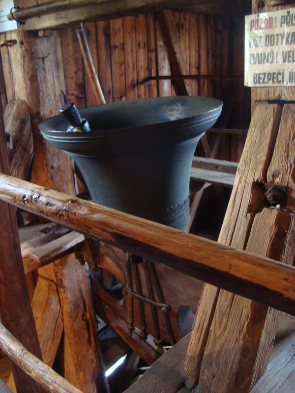
Obrácené zvony v Rovensku
Z Rovenska jsme pokračovali do Turnova na zámek Hrubý Rohozec. Ten sice zvenčí vypadá (zejména v kontextu většiny hradů a zámků v okolí) poněkud zanedbaně, ale byla by velká škoda ho obejít, protože ukrývá krom zajímavé historie také překrásné původně zařízené interiéry. Předchůdcem dnešního zámku byl raně gotický hrad postavený po roce 1300. Na počátku 16.století došlo k přestavbě Hrubého Rohozce na pohodlné pozdně gotické sídlo. Zámek byl aktivně obýván v podstatě až do 2. světové války a do té doby si prošel celou řadou dalších přestaveb a úprav. V roce 1628 získal zámek do svého vlastnictví Mikuláš Des Fours, jehož rod pak Hrubý Rohozec obýval až do konfiskace v roce 1945. Interiéry zámku jsou prezentovány v původní podobě ze 30. let, kdy zde žil předposlední majitel Hrubého Rohozce hrabě Mikuláš Vladimír Des Fours Walderode. Jeho životní příběh je poměrně kontroverzní. Mikuláš se už od mládí zajímal o historii svého rodu a ušetřil historikům spoustu práce tím, že nechal popsat téměř každý portrét a řadu předmětů na zámku. Ve 30. letech se však přiklonil k fašismu a v roce 1938 se stal členem Sudetoněmecké strany. Jeho manželka i prvorozený syn tak učinili rovněž, mladší synové vstoupili do Hitlerjugend. Záhy se ukázalo, že tím si celá rodina podepsala ortel. Mladší syn zahynul na frontě, Mikuláš (coby těžký kuřák) ještě za války zemřel na rakovinu hrtanu a manželka s druhým synem umírají za ne zcela vyjasněných okolností záhy po skončení války. Musím říct, že přestože Hrubý Rohozec rozhodně nepatří k těm nejvyhledávanějším památkám v Českém ráji, mě jeho příběh a celková atmosféra zaujaly snad nejvíc.
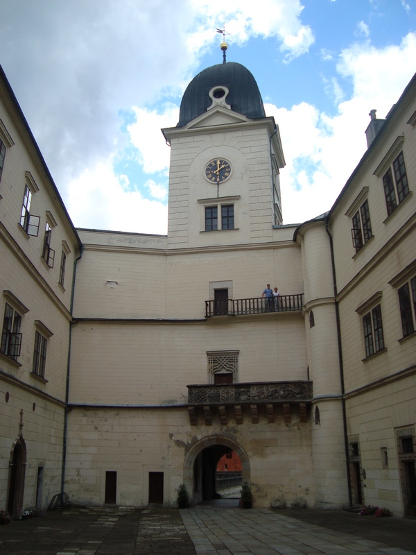
Hrubý Rohozec
Po návštěvě zámeckého parku jsme vyrazili vzhůru za další památkou - malebným zámkem Sychrov.
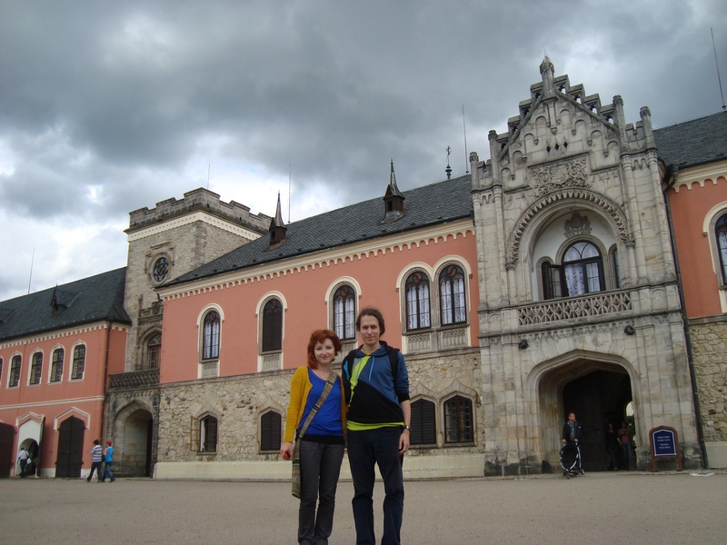
Na Sychrově
Sychrov je opravdu okouzlující místo, natáčela se tu nejedna pohádka a protože byla zrovna sobota a počasí se umoudřilo, proháněla se po rozlehlém zámeckém parku také nejedna nevěsta :D…
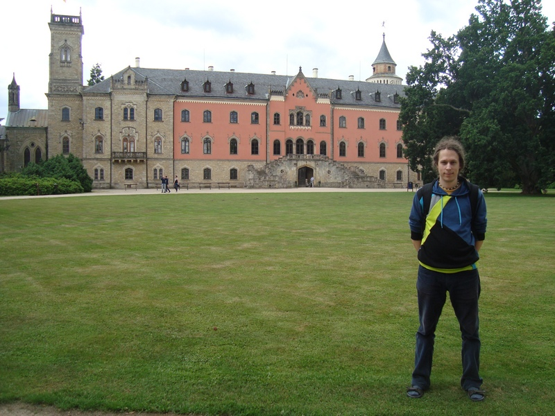
Zámek Sychrov zezadu
Ani zde jsme si nenechali ujít prohlídku hlavního okruhu, nicméně byli jsme z ní poměrně zklamaní. Skupinku tvořilo příliš mnoho lidí a sychrovské komnaty jsou dost malé, takže se několikrát stalo, že jsme se buď mačkali v jedné místnosti nebo část skupinky zaostávala ve vedlejší místnosti, protože už by se nevešla. Tak či tak to dost kazilo dojem z prohlídky a jako bonus výklad neustále narušovalo neuvěřitelně zlobivé dítě, kterému rodiče nebyli schopni ucpat ústní otvor, což průvodkyni dost točilo (ani se nedivím), takže jim pak po skončení prohlídky sotva odpověděla na pozdrav.
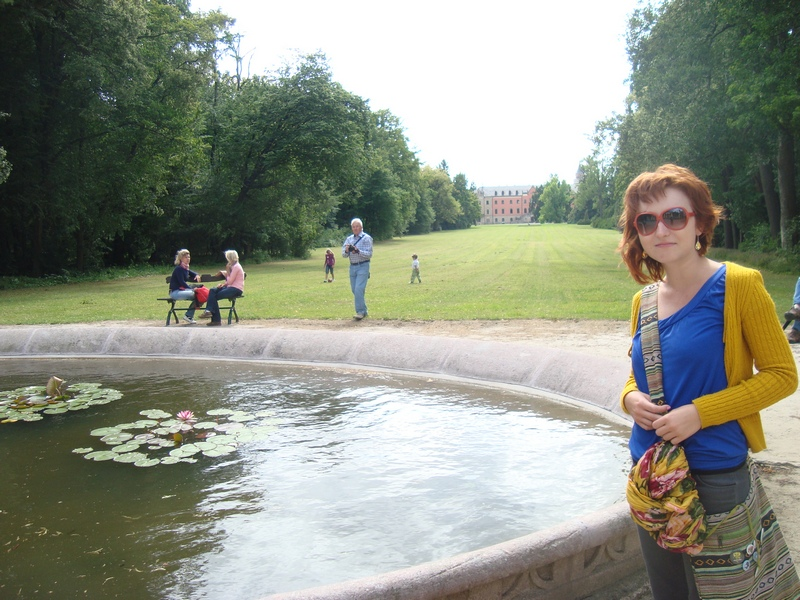
V zámeckém parku
Abychom si zpravili náladu, vydali jsme se na procházku po upraveném zámeckém parku, který skrývá spoustu hezkých zákoutí, například vyhlídku, z které jsme krásně viděli na Ještěd. Po obědě jsme se ještě vydali pro kešku k památníku připomínajícímu návštěvu císaře Františka Josefa na Sychrově. Před odjezdem jsme se cestou k autu potěšili pohledem na stádo koziček pasoucích se za plotem a už jsme frčeli za další pamětihodností.
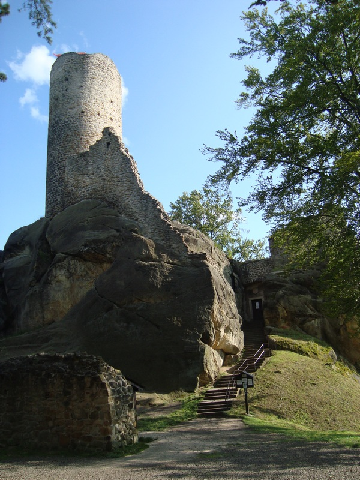
Frýdštejn
Čtvrtou zastávkou se pro nás stala působivá zřícenina hradu Frýdštejn. Bohužel jsme se na Sychrově zdrželi moc dlouho a prohlídku jsme už nestihli, ale vydrápali jsme se alespoň na louku nad Frýdštejnem, kde jsme si užili skoro stejně krásný výhled, jako z hradní věže. Na Frýdštejně se mi líbilo možná úplně ze všeho nejvíc a kdybychom neměli ten den před sebou ještě další program, asi bych v trávě pod hradem s okouzlujícím výhledem seděla dodnes :)…
Měli jsme v plánu navštívit ještě nedaleký hrad Vranov, ale nakonec jsme tento nápad opustili a vydali se raději do Malých Skal. Vranov nás přesto neminul, jeho silueta na skalách je k nepřehlédnutí. Za jeho fotkou jsme neváhali zajet do uzoučké obytné zóny, odkud byl pěkně vidět.
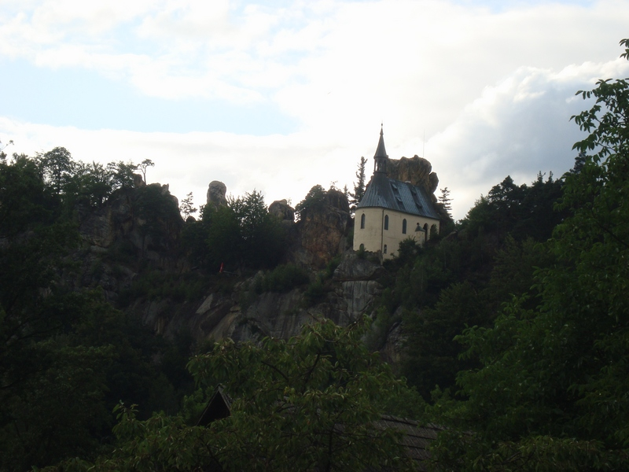
Vranov…fotka, jejíž pořízení nás málem stálo levé zpětné zrcátko 8-)
Poslední štací toho dne se tedy stal skalní labyrint v Malých skalách, které jsou možná neprávem turisty opomíjené. Nám se tu líbilo moc a litovali jsme, že nám na tuto část zbylo jen něco přes hodinku. Na večer jsme totiž opět měli objednanou večeři z voucheru O:-), takže jsme se museli do 9ti vrátit do penzionu.
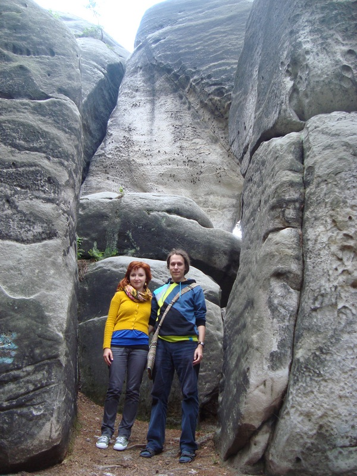
Skalní labyrint
Uteklo to jako nic a byl tu poslední den dovolené. Pokusili jsme se z něj vytěžit maximum a navštívit 3 zajímavá místa, která jsme dosud nestihli. Nejprve jsme se tedy vyšplhali na rozhlednu Tábor, vedle které jsme celou dobu bydleli, a tak by byla škoda ji opomenout. Nabízí prý jeden z nejkrásnějších výhledů na naši zem a musím říct, že je to pravda. Ráno se sice po obloze honily mraky, ale i navzdory tomu ten výhled stál zato…
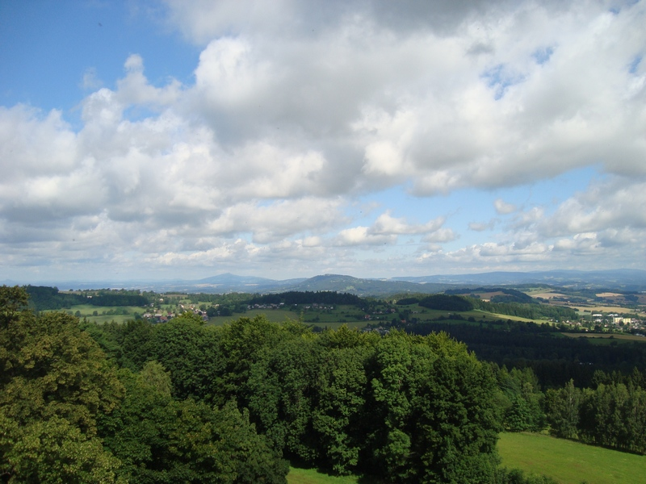
Výhled z Tábora
Dále naše cesta vedla na zříceninu hradu Valečov, jehož malebnost inspirovala i Karla Hynka Máchu, který toto místo několikrát navštívil a dochovalo se dokonce několik jeho skic, na kterých Valečov zachytil. Jedná se o poměrně zachovalou zříceninu s dlouhou historií. Náš pan průvodce byl ale děsný suchar (byť měl na sobě kovbojský obleček :D) a u jeho výkladu jsem pospávala, tak vám toho k historii Valečova moc neřeknu :D.
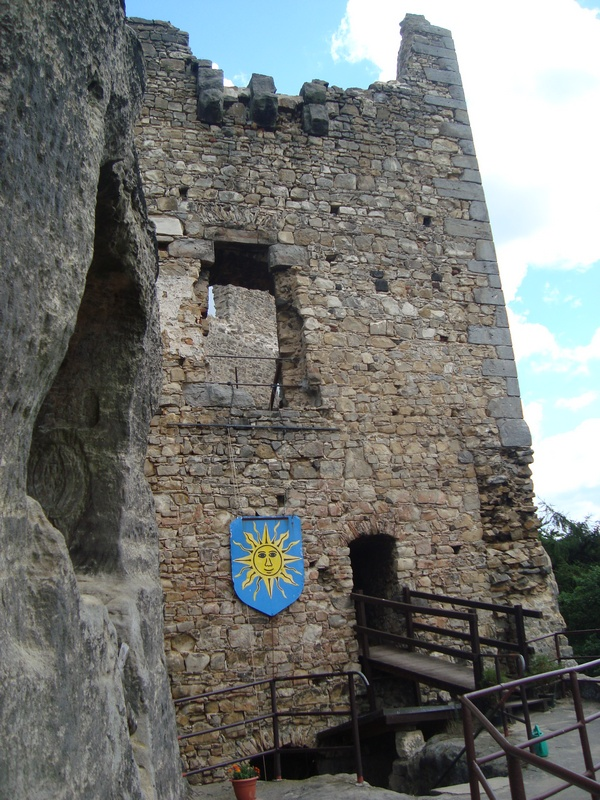
Valečov
A na konec naší dovolené jsme si nechali turisty okupované Drábské světničky, které jsou od Valečova coby kamenem. Šplhá se k nim po místy docela nebezpečných schůdcích a žebřících a fakt nechápu, kde se tam nahoře vzalo tolik dětí a psů :D. Každopádně je to další z místních skalních zajímavostí, které stojí zato vidět na vlastní oči. Archeologické nálezy svědčí o tom, že Drábské světničky byly osídleny od 12. do 15. století. Zdá se, že dřevěný a ve skále vytesaný hrad, po němž se zde zachovaly stopy, byl poslední etapou stálého osídlení. Není však vyloučeno, že světničky byly využívány jako příležitostného útočiště ještě mnohem později.


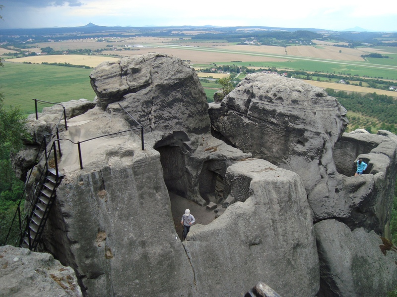
Drábské světničky
Z Drábských světniček nás nakonec vyhnal liják i tlačící čas - čekala nás totiž ještě dlouhá cesta domů. Naštěstí jsme ji zvládli poměrně rychle a krom bloudění na začarovaném kruhovém objezdu v Kolíně i bez větších potíží :). Jsem ráda, že jsme toho stihli tolik, ale mít ještě pár dnů navíc, určitě bychom věděli, co s nimi. Prostě i ta nejlepší dovolená má svou vadu - hrozně rychle uteče O:)…
Malé skály mi připomněly Ostaš. Taky míň známý skalní město a bylo to tam super.